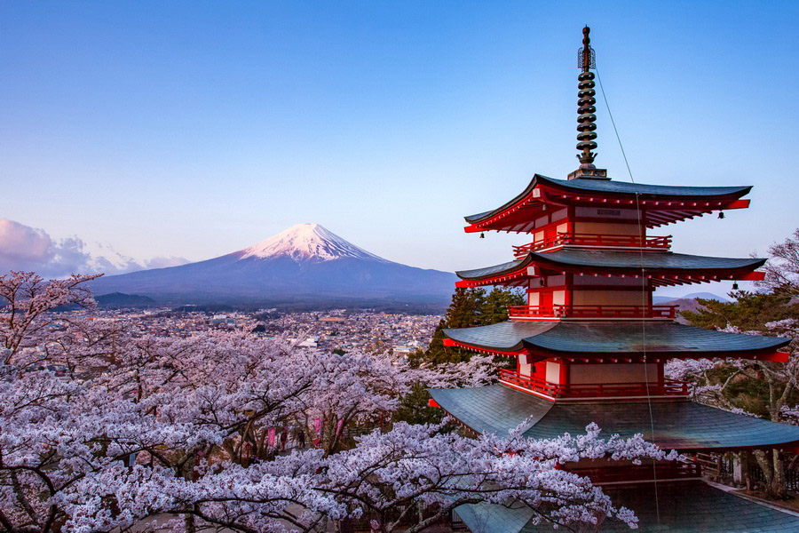
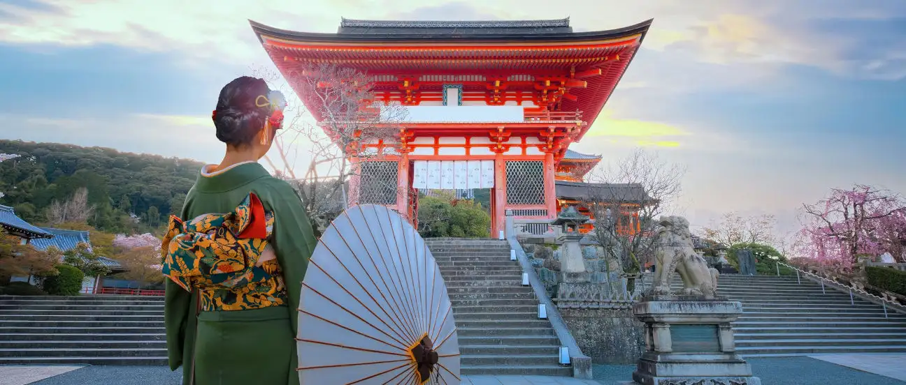

Japón
Tu siguiente destino

Descripción
Japón es un destino turístico fascinante que combina tradición, tecnología, naturaleza y cultura. Sus ciudades, como Tokio, Kioto y Osaka, ofrecen experiencias únicas, desde modernos rascacielos y centros tecnológicos hasta antiguos templos, santuarios y barrios tradicionales.
Entre sus principales atractivos se encuentran el Monte Fuji, los templos de Kioto, los cerezos en flor, los jardines japoneses y la gastronomía, famosa por platos como el sushi, ramen y tempura. Además, Japón destaca por su excelente transporte, especialmente sus trenes de alta velocidad.
Es un país ideal para quienes buscan aventura, cultura, historia, gastronomía y paisajes impresionantes, convirtiéndolo en uno de los destinos turísticos más interesantes de Asia.
Sitios para visitar
- Monte Fuji y la Pagoda Chureito
- Templos de Kioto
- Tokyo Skytree
- Barrio de Asakusa (Tokio)
- Osaka y su gastronomía
Tiempo de estadía recomendado
7 a 10 días
Precios estimados por persona (USD)
- Vuelo ida y vuelta desde Panamá (con escalas) $1,250
- Hospedaje (6 noches) $660
- Tren bala Tokio–Kioto (ida y vuelta) $200
- Tokyo Skytree $15
- Entradas a templos y excursión al Monte Fuji $100
- Comidas y transporte local $420
- Total estimado $2,645
Precios aproximados consultados en octubre de 2026. Pueden variar según la fecha y la temporada.
Galería del destino
